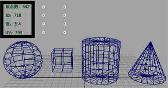
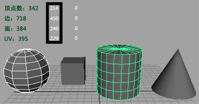
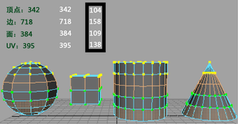

可以使用“平视显示仪”(Heads Up Display)在场景中显示多边形对象的多边形数。“平视显示仪”(Heads Up Display)指示视图中多边形顶点、边、面、三角形和 UV 的数量，而不遮挡对象视图。
如果 3D 场景旨在用于交互式视频游戏中，则显示多边形数特别有用。交互式视频游戏通常对多边形数进行限制，以此来保持实时交互。
在场景视图中显示多边形计数
“平视显示仪”(Heads Up Display)显示在视图的左上角。
| 列 | 显示... |
|---|---|
|
左对齐 |
所有可见多边形的总计数。 
|
|
中间 |
选定多边形的计数。 
|
|
右对齐 |
在视图中部分可见的对象上选定组件的计数。 
|
多边形数显示仅计算可见对象（无论它们是否已选定）。如果您平移视图以使某些对象不再可见，则它们将不包括在多边形数中。
这可供游戏开发人员了解给定视图将需要多少个多边形。